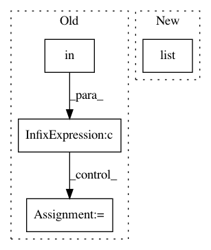

f7b7edac5b9e329ffdda30d710f68db71d08e065,nni/common/graph_utils.py,TorchModuleGraph,_expand_key_func_node,#TorchModuleGraph#Any#Any#Any#Any#Any#,250
Before Change
curr_node = node_queue.get()
for _input in curr_node.inputs():
input_name = _input.debugName()
if input_name in output_to_node and output_to_node[input_name] in nodes:
predecessor_node = output_to_node[input_name]
if not self._is_key_func(predecessor_node):
node_group.append(predecessor_node)
node_queue.put(predecessor_node)
else:
After Change
continue
outputs.add(output.debugName())
nodepy = NodePyGroup(node_name, unique_name, module_type, op_type,
node_group, inputs=list(inputs), outputs=list(outputs), key_node=node)
return nodepy
def _expand_module_node(self, node, node_name, unique_name, op_type, nodes,
In pattern: SUPERPATTERN
Frequency: 3
Non-data size: 4
Instances
Project Name: microsoft/nni
Commit Name: f7b7edac5b9e329ffdda30d710f68db71d08e065
Time: 2020-11-22
Author: 38930155+chicm-ms@users.noreply.github.com
File Name: nni/common/graph_utils.py
Class Name: TorchModuleGraph
Method Name: _expand_key_func_node
Project Name: microsoft/nni
Commit Name: f7b7edac5b9e329ffdda30d710f68db71d08e065
Time: 2020-11-22
Author: 38930155+chicm-ms@users.noreply.github.com
File Name: nni/common/graph_utils.py
Class Name: TorchModuleGraph
Method Name: _expand_module_node
Project Name: microsoft/nni
Commit Name: 5d2a59fd4cf708d285d0db8ff3522c9156d2c4a9
Time: 2020-08-12
Author: 49771382+zheng-ningxin@users.noreply.github.com
File Name: src/sdk/pynni/nni/_graph_utils.py
Class Name: TorchModuleGraph
Method Name: unpack_manually